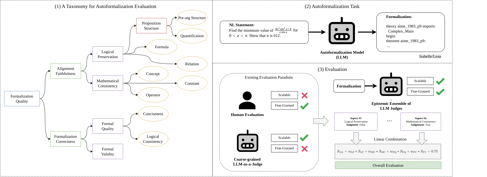

Evaluates LLM-judge ensembles on Lean4 and Isabelle/HOL autoformalizations from miniF2F and ProofNet, with formal validity checked by the theorem prover.
Abstract
Statement autoformalization plays a crucial role in formal mathematical reasoning by enabling the automatic translation of natural language statements into formal languages. While recent advances using large language models (LLMs) have shown promising capability of autoformalization, methods for automatically evaluating autoformalization remain underexplored. LLM-as-a-judge presents a promising approach for automating such evaluation, however, existing methods typically employ coarse-grained and generic evaluation criteria, which limit their effectiveness for advanced formal mathematical reasoning, where quality hinges on nuanced, multi-granular dimensions. In this work, we take a step toward addressing this gap by introducing a systematic, automatic method to evaluate autoformalization tasks. The proposed method is based on an epistemically and formally grounded ensemble (EFG) of LLM judges, defined on criteria encompassing logical preservation (LP), mathematical consistency (MC), formal quality (FQ), and formal validity (FV), resulting in a transparent assessment that accounts for different contributing factors. We validate the proposed framework to serve as a proxy for autoformalization assessment within the domain of formal mathematics. Overall, our experiments demonstrate that the EFG ensemble of LLM judges is a more suitable emerging proxy for evaluation than a coarse-grained model. These findings suggest that LLM-as-judges, especially when guided by a well-defined set of atomic properties, could offer a scalable, interpretable, and reliable support for evaluating formal mathematical reasoning.
Problem
Evaluating autoformalization, the translation of natural-language math statements into formal languages, is hard. Syntactic checks miss semantic errors, human review does not scale, and reference-based metrics depend on ground truths that may be wrong.
Approach
The authors propose an epistemically and formally grounded (EFG) ensemble of LLM judges. Each judge scores one atomic criterion: logical preservation, mathematical consistency, formal quality, or formal validity, with the last checked by the theorem prover. A linear model combines the criteria into an overall score. Human rankings and assessments of formalizations from miniF2F and ProofNet in Lean4 and Isabelle/HOL are used for validation.

Figure 1: Overview of the proposed framework for automatically evaluating autoformalization. Our method leverages ensembles of LLM judges based on epistemic criteria organized into a taxonomy, while also providing explanations for their judgments. A linear evaluation model aggregates the criteria into a single overall assessment to serve as a proxy for human evaluation.
Results
Fine-grained EFG judges agree more closely with human rankings than coarse-grained judges. GPT-4.1-mini guided by operable atomic properties reaches about 72.7% pairwise ranking match with one human annotator on miniF2F, comparable to the 70% agreement between the two humans. Human review also found that many ground-truth formalizations in the benchmarks are flawed.
AF
Judge
LP
MC
FQ
OA
GPT-4.1
GPT-4.1-mini
0.924
0.985
0.957
0.891
Qwen-7B
GPT-4.1-mini
0.627
0.842
0.758
0.703
GPT-4.1
Qwen-Coder-7B
0.703
0.757
0.328
0.621
Qwen-7B
Qwen-Coder-7B
0.473
0.616
0.170
0.461
Overall-assessment (OA) agreement on miniF2F test set with different autoformalizers (AF) and judges (Lean4)